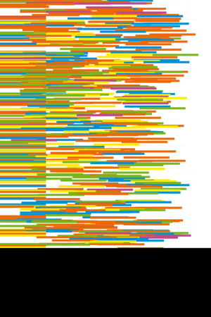
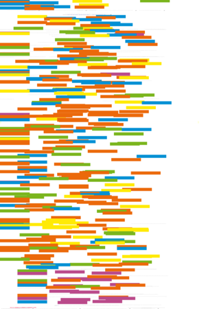
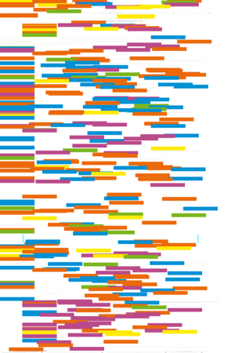
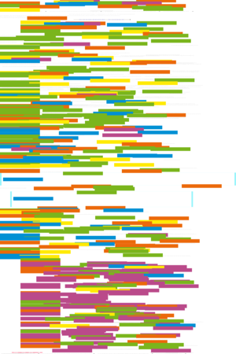

| About IR |
| Editors |
| Author instructions |
| Copyright |
| Author index |
| Subject index |
| Search |
| Reviews |
| Weblog |
| Register |
| Home |
Volume 10 No 4 July, 2005
Invited paper: Marcia J. Bates
Information and knowledge: an evolutionary framework for information science
Eric Thivant
 Information seeking and use behaviour of economists and business analysts.
Information seeking and use behaviour of economists and business analysts.
Christian Schlögl
 Information and knowledge management: dimensions and approaches.
Information and knowledge management: dimensions and approaches.
Erik Borglund
Operational use of electronic records in police work
AnnBritt Enochsson
A gender perspective on Internet use: consequences for information seeking
James E. Andrews, J. David Johnson, Donald O. Case,
Suzie Allard and Kimberly Kelly
Intention to seek information on cancer genetics
 Resúmenes en Español
Resúmenes en Español
Watch this: Greasemonkey the Web — one of a series of occasional columns by Terrence A. Brooks of the Information School, University of Washington, USA.
Reviews
Calishain, T. and Dornfest, R. Google hacks: tips and tools for smarter searching. (2nd ed.) Sebastopol, CA: O'Reilly, 2005.
Chu, Heting. Information representation and retrieval in the digital age. Medford, NJ: Information Today for the American Society for Information Science and Technology, 2003.
Egghe, Leo. Power laws in the information production process: Lotkaian informetrics. Kidlington, Oxfordshire: Elsevier Academic Press, 2005.
Galla, Preston. Windows XP Hacks: tips and tools for optimizing your OS. (2nd ed.) Sebastopol, CA: O'Reilly, 2005.
Gehring, Verna V. (Ed.). The Internet in public life. Lanham, MD; Oxford: Rowman & Littlefield Publishers, Inc., 2004.
McFarlane, Nigel. Firefox hacks: tips & tools for next-generation Web browsing. Sebastopol, CA: O'Reilly, 2005.
Mitchell, Anne M. and Surratt, Brian E. Cataloguing and organizing digital resources. London: Facet Publishing, 2005.
O'Mara, Margaret Pugh. Cities of knowledge: Cold War science and the search for the next Silicon Valley. Princeton, NJ: Princeton University Press, 2005
Pavlichev, Alexi and Garson, David G. (Eds). Digital government: principles and best practices. London: Idea Group Inc., 2004.
Roberts, Sue and Rowley, Jennifer. Managing information services. London: Facet Publishing, 2004.
Thelwall, Mike. Link analysis: an information science approach. San Diego, CA: Elsevier Academic Press, 2004.
Software Review: RefViz Version 2. Berkeley, CA: Thomson/ISI ResearchSoft, 2005.
Software Review: TreePad Business Edition. Version 7.1.2. Almere, the Netherlands: Freebyte.com, 2004.
What's in the open access e-journals?
Conference announcements
A message to Conference organizers.
8th International Bielefeld Conference, 7 - 9 February 2006
Academic Library and Information Services: New Paradigms for the Digital Age
Check the other resources available at InformationR.net - free resources for information researchers. If you find Information Research useful please sign in and we'll notify you of future issues.
Contribute ideas and links to relevant resources on the Weblog. Join at
http://www.free-conversant.com/irweblog/
Information Research: an international electronic journal, is published four times a year by Professor Tom Wilson with technical support from Lund University, Sweden and editorial support from the Swedish School of Librarianship and Information Science, Högskolan in Borås.
| |||
 |
Web Counter |
||